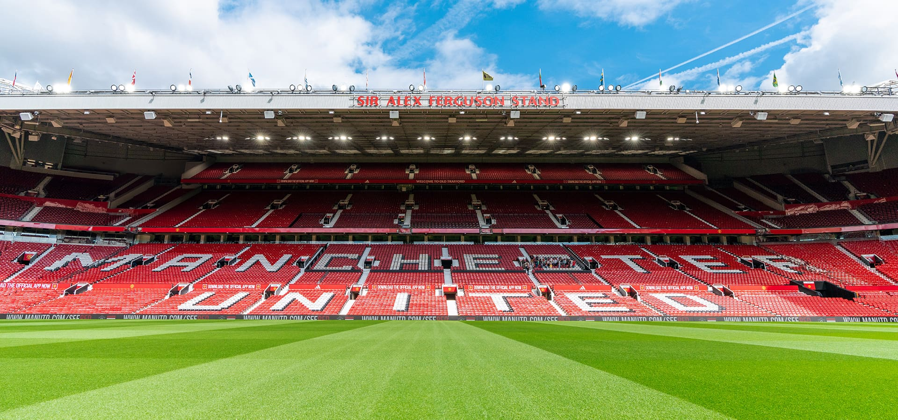

Sir Matt Busby Way, Manchester M16 0RA
Sir Matt Busby Way, Manchester M16 0RA
Old Trafford has been the home of Manchester United since 1910. It is a place of pilgrimage for fans across the globe.

The ground consists of four main stands: The Sir Alex Ferguson Stand, the Sir Bobby Charlton Stand, the East Stand, and the world-famous Stretford End.